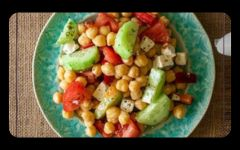

Planes de alimentación
Desayuno
-
1. Smoothie vegano proteico de frutas.
Ingredientes:
Preparación
250 ml de leche
1 cazo de Impact Whey Protein
1 plátano
1 yogur
1 puñado de mezcla de bayas congeladas
Simplemente mezcla todos los ingredientes, sirve en un vaso y disfruta.
-
2.Batido de chocolate y café
Ingredientes:
Preparación
200 ml de leche
100 ml de café preparado
1 cazo (30 g) de Impact Whey Protein (sabor Chocolate)
100 g de plátano
Vierte todos los ingredientes en el vaso de la batidora y bate a máxima potencia hasta que quede todo bien mezclado. Si quieres una textura más cremosa, puedes añadir unos cubitos de hielo y seguir batiendo hasta conseguir la textura deseada.
-
3. Batido pre-entreno casero energizante
Ingredientes
Preparación
200 ml de leche desnatada
400 g de melocotón en lata
1 cazo de Impact Whey Protein sabor Vainilla
10 g de remolacha en polvo
5 g de Guaraná Orgánico en Polvo
5 g de Creatina Monohidrato
6-8 cubitos de hieloSimplemente, vierte todos los ingredientes en la batidora y bate hasta conseguir una mezcla fina. Consume 60-90 minutos antes de un entrenamiento.
-
4. Batido post entreno para ganar músculo
Ingredientes 1 cazo (35 g) de Maltodextrina 5 g de L-Leucina 1 g de HMB 1-2 cazos de Impact Whey Isolate sabor Vainilla 1 plátano maduro 200 ml de leche desnatada/agua
PreparaciónSimplemente, vierte todos los ingredientes en la batidora y bate hasta conseguir una mezcla fina. Consume dentro de la primera hora después de un entrenamiento para aprovechar todos los beneficios.
-
5. Batido energético post-entrenamiento
Ingrediente
Preparación
1 plátano
1 puñado de arándanos
250 ml de leche de avena
1 cazo de Maca Orgánica en Polvo
1 cazo de Semillas de Chía Orgánica
Echa todos los ingredientes en una batidora y bate hasta conseguir una masa fina y homogénea. Vierte el contenido en un vaso y disfrútalo cuando quieras. Puedes tomarlo recién hecho o llevarlo al gimnasio en un shaker para tomarlo después de entrenar.
- 6. 1 manzana con cáscara + 10 unidades de marañón/ merey/ anacardo
- PLAN DE ALIMENTACIÓN 1:
- Opción 1: Ensalada de pollo a la parrilla con vegetales mixtos (lechuga, tomate, pepino, zanahoria), aderezada con vinagreta de limón y aceite de oliva. Acompañada de una porción de arroz integral.

- Opción 2: Sándwich de pavo con pan integral, rodajas de aguacate, tomate y lechuga. Acompañado de una ensalada verde con vinagreta balsámica.

- Opción 3: Bowl de quinoa con salmón a la plancha, espárragos y brócoli al vapor. Agrega limón y hierbas frescas para darle sabor.

- PLAN DE ALIMENTACIÓN 2:
- Opción 1: Tacos de pollo a la parrilla con tortillas de maíz, guacamole casero, salsa de yogur y vegetales picados (cebolla, pimientos, tomate). Acompañados de frijoles negros refritos.

- Opción 2: Ensalada de garbanzos con tomate cherry, pepino, pimientos y queso feta. Aliñada con aceite de oliva y vinagre de manzana. Acompañada de una porción de pan integral.
- Opción 3: Pechuga de pollo a la plancha con quinoa y una porción de verduras al vapor (brócoli, zanahorias, coliflor).

- PLAN DE ALIMENTACIÓN 3:
- Opción 1: Pasta integral con salsa de tomate casera, vegetales asados (calabacín, berenjena, pimientos) y pollo desmenuzado.

- Opción 2: Ensalada de atún con hojas verdes, tomate, aceitunas, huevo duro y aderezo de yogur. Acompañada de una porción de pan integral.

- Opción 3: Bowl de arroz integral con tofu salteado, vegetales salteados (zanahorias, pimientos, champiñones) y salsa de soja baja en sodio.

Recuerda que es importante incluir una variedad de alimentos en tu almuerzo para obtener una buena cantidad de proteínas, carbohidratos, grasas saludables, vitaminas y minerales. Adaptar los ejemplos a tus preferencias y necesidades individuales es fundamental. También puedes considerar preparar comidas con anticipación para facilitar tu rutina y asegurarte de tener opciones saludables disponibles.
-
PLAN DE ALIMENTACIÓN 4:
1 pechuga grande o 2 medianas de pavo a la plancha (150 g - 250 g) + 5 cucharadas de arroz integral + Ensalada cruda de repollo, zanahoria y cebolla, aderezada con 1 o 2 cucharaditas de aceite de oliva y limón.

MERIENDA DE LA TARDE
- 1 batido de proteínas hecho con leche entera o leche vegetal, frutas, mantequilla de maní y un puñado de avena.
- PLAN DE ALIMENTACIÓN 1:
- Opción 1: Filete de salmón a la plancha con espárragos al vapor y puré de papas al horno.

- Opción 2: Ensalada de pollo a la parrilla con hojas verdes mixtas, aguacate, tomate y aderezo de yogur griego bajo en grasa.

- Opción 3: Tacos de camarones a la parrilla con tortillas de maíz, repollo rallado, salsa de yogur y una guarnición de arroz integral.

- PLAN DE ALIMENTACIÓN 2:
- Opción 1: Pechuga de pollo al horno con especias, acompañada de una porción de quinoa y una ensalada de vegetales mixtos.

- Opción 2: Stir-fry de tofu y vegetales (brócoli, zanahorias, pimientos) con salsa de soja baja en sodio y servido sobre arroz integral.

- Opción 3: Pescado blanco al horno con limón y hierbas, acompañado de una porción de batatas asadas y una ensalada de espinacas con fresas y nueces.

-
PLAN DE ALIMENTACIÓN 3:
- Opción 1: Ensalada de garbanzos con tomate, pepino, cebolla roja, aceitunas y queso feta. Aliñada con aceite de oliva y vinagre balsámico. Acompañada de una porción de pan integral.

- Opción 2: Tortilla de claras de huevo con espinacas, champiñones y queso bajo en grasa. Acompañada de una ensalada verde.

- Opción 3: Lasaña de vegetales con capas de berenjena, calabacín, espinacas y queso bajo en grasa, acompañada de una ensalada mixta.

Recuerda que estos son solo ejemplos y puedes adaptarlos según tus preferencias y necesidades nutricionales. Es importante incluir una combinación equilibrada de proteínas, carbohidratos y grasas saludables en tu cena. Además, trata de evitar comidas pesadas antes de acostarte, ya que una cena ligera es preferible para facilitar la digestión durante la noche.
-
PLAN DE ALIMENTACIÓN 4:
120 g de atún con 2 papas medianas con cáscara + Ensalada de remolacha y zanahoria cocida, aderezada con 1 o 2 cucharaditas de aceite de oliva.

BATIDOS DE PROTEÍNAS PARA EL DESAYUNO


MERIENDA DE LA MAÑANA:

Almuerzo

Cena
Aquí tienes algunos ejemplos de planes de alimentación saludables para la cena.